Alternating knots are rare
Harrison Chapman
Colorado State University
hchapman.github.io/talks/altknots
OIST Geometry and Topology of Manifolds Group
18th February 2019
Alternating links
A knot or link type is alternating if it admits a diagram whose crossings alternate between over- and underpasses.
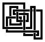
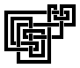
Alternating links are rare
Thistlethwaite '98
Alternating link types are exponentially rare among links.
Let \(\altlinkclass\) be the set of all alternating link types,
with counts \(\altlinkcount\) indexed by crossing number
If \(L_n\) is the number of all link types, the theorem says;
\[ \lim_{n\to\infty}{L_n^{1/n}} > \lim_{n\to\infty}{\altlinkcount^{1/n}}\]
Question (Classical)
Does the same result hold for alternating knot types?
Alternating knots should be rare
Data of Hoste, Thistlethwaite, and Weeks '98 suggests
alternating knot types are rare
| \(n\) |
# Knots |
# Alternating |
% Alternating |
| 6 | 3 | 3 | 100% |
| 7 | 7 | 7 | 100% |
| 8 | 21 | 18 | 86% |
| \(\vdots\) |
| 15 | 253 293 | 85 263 | 51% |
| 16 | 1 388 705 | 379 799 | 38% |
Why are alternating links rare?
Thistlethwaite '98
Alternating link types are exponentially rare among all link types.
Weak & Insufficient Reasoning
Every \(n\)-crossing link diagram has \(2^n\) crossing
assignments, of which precisely two are
alternating.
Must pay very close attention to equivalence classes of diagrams
Tangles
Simplification from Combinatorics
Objects with fewer symmetries are easier to enumerate
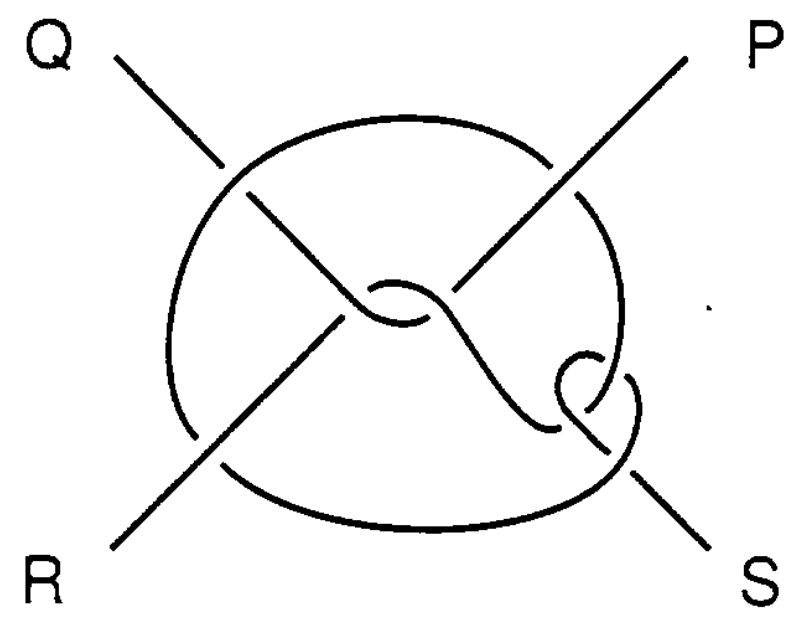
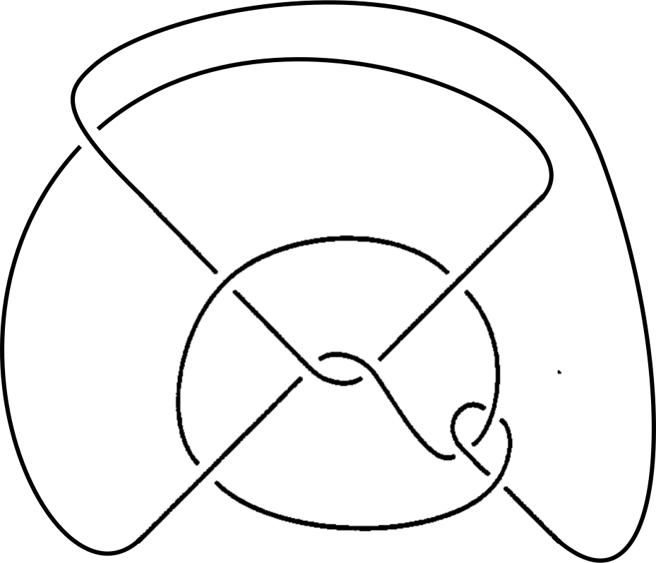
Sundberg and Thistlethwaite '98
Tangles can be closed to links by adding an additional crossing.
Tait Flyping Conjecture
Ingredient 1: The Tait Flyping Conjecture holds for alternating links;
Menasco and Thistlethwaite '91
Any two alternating link or tangle diagrams are related by a sequence of flypes if and only if they represent the same link or tangle type.
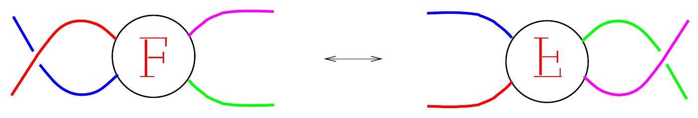
Zinn-Justin and Zuber '10
Tait Flyping Conjecture & Knots
Tait Flyping Conjecture still holds for alternating knots
Menasco and Thistlethwaite '91
Any two alternating knot diagrams are related by a sequence of flypes if and only if they represent the same knot type.
Enumeration of alternating links
Ingredient 2: Alternating link and tangle types can be enumerated;
Sundberg and Thistlethwaite '98
The numbers \(\tanglecount\) of alternating tangle types have a well-understood generating function (g.f.),
\[ \tanglegenfun{z} =
\sum_{\color{tangle}\substack{\text{alternating}\\\text{link types } {{\color{black}L}}}}{z^{\mathop{cr}(L)}} =
\sum_{n}^{\infty} {\tanglecount z^n}.\]
Enumeration of alternating links
Sundberg and Thistlethwaite '98
The counts \(\tanglecount\) grow asymptotically as,
\[ \tanglecount \sim \frac{3 \,c_1}{4 \sqrt \pi} n^{-5/2} \altlinkgrowth^{n-3/2}, \]
for known constants \(c_1\) and \(\altlinkgrowth\).
Zinn-Justin and Zuber '02 reprove this using
techniques from random matrix theory
The generating function \(\tanglegenfun{z}\)
The g.f. of alternating tangle types \(\tanglegenfun{z}\)
satisfies:
\[ \tanglegenfun{z} = \algtanglegenfun{z}{\bpotanglegenfun{\tanglegenfun{z}}} \]
where;
- \(z\) marks crossings,
- \(\zeta\) marks slots for tangles (or templates)
- \(\bpotanglegenfun{\zeta}\) is the g.f. of basic polyhedral templates
- \(\algtanglegenfun{z}{\zeta}\) is the g.f. of flype-equivalence classes of algebraic templates,
Basic polyhedral templates
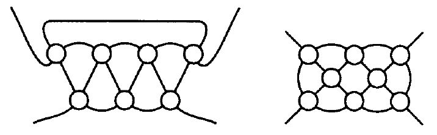
Sundberg and Thistlethwaite '98
Basic polyhedral templates, counted by \(\bpotanglegenfun{\zeta}\)
Bijection with rooted \(c\)-nets studied by Tutte '63:
\[\bpotanglegenfun{\zeta} = {\scriptsize \frac{1}{2(\zeta+2)^3}\left( (1-4\zeta)^{3/2} + (2\zeta^2 - 10\zeta - 1) \right) - \frac{2}{1+\zeta} - \zeta + 2}\]
(formula due to Sundberg and Thistlethwaite)
Algebraic templates
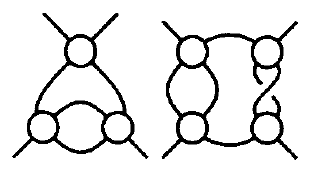
Sundberg and Thistlethwaite '98
Flype equivalence classes of algebraic templates, counted by \(\algtanglegenfun{z}{\zeta}\)
Key observation
Flyping can only occur within an algebraic template
Algebraic templates
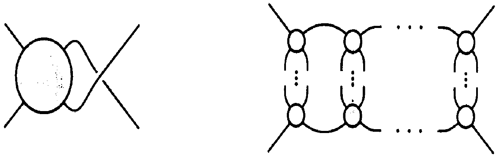
Sundberg and Thistlethwaite '98
Admit recursive decomposition into horizontal templates:
\[\algtanglegenfun{z}{\zeta} = \hortanglegenfun{z}{\zeta} + \hortanglegenfun{z}{\zeta} + z - \zeta,\]
where \(\hortanglegamma\) satisfies
\[\hortanglegamma = z\algtanglegenfun{z}{\zeta} + \frac{\hortanglegamma^2}{1-\hortanglegamma} + \zeta\]
Counts of tangles and links
Counts of alternating tangle types \(\tanglecount\) and
alternating link types \(\altlinkcount\) are related;
Counts
\[ \frac{\tanglecountdec}{8(2n-3)} \le \altlinkcount \le \frac{\tanglecountdec}2 \]
Exponential growth rates
\[ \lim_{n\to\infty}{\altlinkcount^{1/n}} = \lim_{n\to\infty}{\tanglecount^{1/n}} = \altlinkgrowth \]
Enumeration of alternating knots
Little is known about the counts \(\altknotcount\) of alternating knot types;
Schaeffer and Zinn-Justin '04
For some constants \(\tau\) and \(\gamma\),
\[ \altknotcount \sim C \tau^n n^{\gamma-3} \]
Currently
The g.f. \( \sum{\altknotcount}z^n \) is not well understood and the radius of convergence is not known
Rarity of alternating links
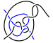
Thistlethwaite '98
The set of tangles \(\superaltlinkclass\) generated by introducing the above (non-alternating) tangle into the set of algebraic templates still satisfies the flyping conjecture
Rarity of alternating links
The g.f. of this superclass of tangle types is obtained by replacing
\[ \algtanglegenfun{z}{\zeta} \quad \text{with}
\quad \beta(z,\zeta) = \algtanglegenfun{z}{\zeta} + z^{13}. \]
This g.f. has strictly smaller radius of convergence
than that of alternating tangle types \(\tanglegenfun{z}\), so:
Thistlethwaite '98
Alternating tangle (and link) types are exponentially rare.
What about alternating knots?
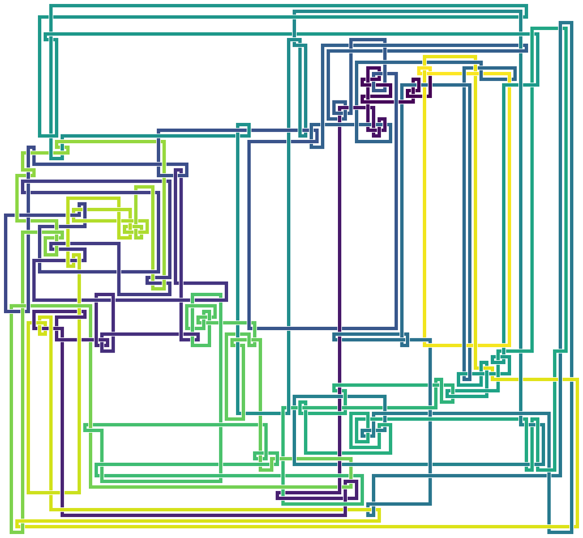
Rarity of alternating knots
Observation
The above tangle can be found in knot types, and is contained
in a superclass \(\superaltknotclass\) of knot diagrams which still
satisfy the flyping conjecture
Cannot quantify the ocurrences with g.f's
(not enough understanding of knots)
Summary so far for knots
We have:
Alternating knot types of \(\altknotclass\) satisfy the flyping conjecture, as do a superclass \(\superaltknotclass\).
We lack:
Enumeration of alternating knot types, or knots in \(\superaltknotclass\).
Pattern theorem
Pattern theorems quantify the density of structure:
C. '18
Let \(P\) be a reduced alternating tangle admitting no
interior flypes that may be found in alternating knot
diagrams.
There exist constants \(\occurconst >
0\), and \(N \in \NN\) such that for all
\(n \ge N\), all but exponentially few
alternating knot types contain \(\ge \occurconst n\)
copies of \(P\).
Pattern theorem implies rarity
\(R = \)
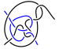
\(\overline R =\)
- There is \(\occurconst\) so that the tangle \(R\) occurs
\(\occurconst n\) times in almost all alternating knot types.
- In \(\superaltknotclass\), the tangles \(R\) and \(\overline R\) are equiprobable.
- Knot types which contain \(\overline R\) are non-alternating.
- To each alternating knot type in \(\altknotclass\), there are at least \(2^{\occurconst n}-1\) more non-alternating knot types in \(\superaltknotclass\).
Alternating knots are rare
We conclude:
C. '18
Alternating knot types are exponentially rare among all knot types.
Requirements for a pattern theorem
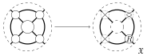
Pattern theorem requires a way of adding
a pattern to alternating knot types that:
- Only produces alternating knot types
- Has a linear number (\(\propto n\)) of attachment sites, and
- Can be un-done, yielding the original knot type
The idea
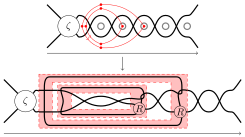
\[ \text{# lone crossings} + \sum_{\substack{\text{all horiz.}\\\text{tangles }\gamma}}{\text{# sites in }\gamma} = n \]
A conjecture on subknots
Millett and Jablan '09
The probability that a minimal prime knot diagram contains a trefoil knotted segment goes to one as the crossing number goes to infinity
C. '18
The probability that an alternating knot type has a minimal prime diagram containing a trefoil knotted segment goes to one as the crossing number goes to infinity
Trefoil segments are common
Proof
The following pattern introduces a trefoil segment:
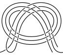
Additivity of connected sum
Classical
The crossing number of knots is additive with respect to connected sum.
Of 1,388,705 prime knot types of 16 crossings,
1,388,694 are hyperbolic, leading to:
Adams '94
Almost all prime knot types are hyperbolic.
Competing conjectures
Malyutin '16
Either of these conjectures contradicts the other.
It's not unreasonable that Adams's conjecture is false
and that current data is only representative of small crossing number
Conjecture
Can we disprove Adams's conjecture, possibly using pattern-theoretic methods?
Take-aways & conclusion
-
Alternating links have the flype conjecture and a complete enumeration
-
Alternating knots share the result on flypes but lack precise enumeration
-
Absent enumerations, pattern theorems can quantify presence of structure:
- Rarity of alternating knots
- Certainty of subknotting
-
Pattern theorems can likely be proven for other classes in topology, geometry, etc...
Thank you!
C. 2018. On the structure and scarcity of alternating knots. Submitted. arXiv: 1804.09780